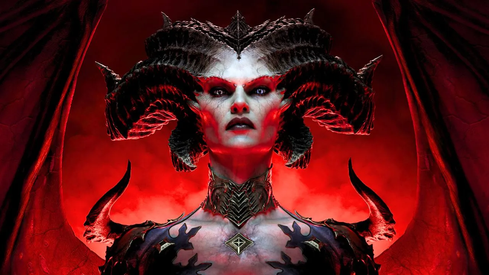
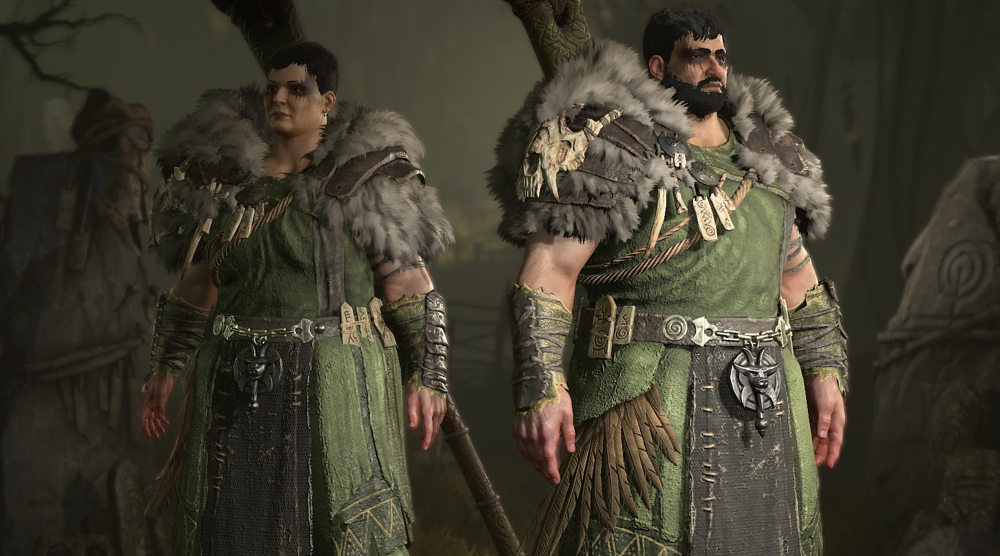
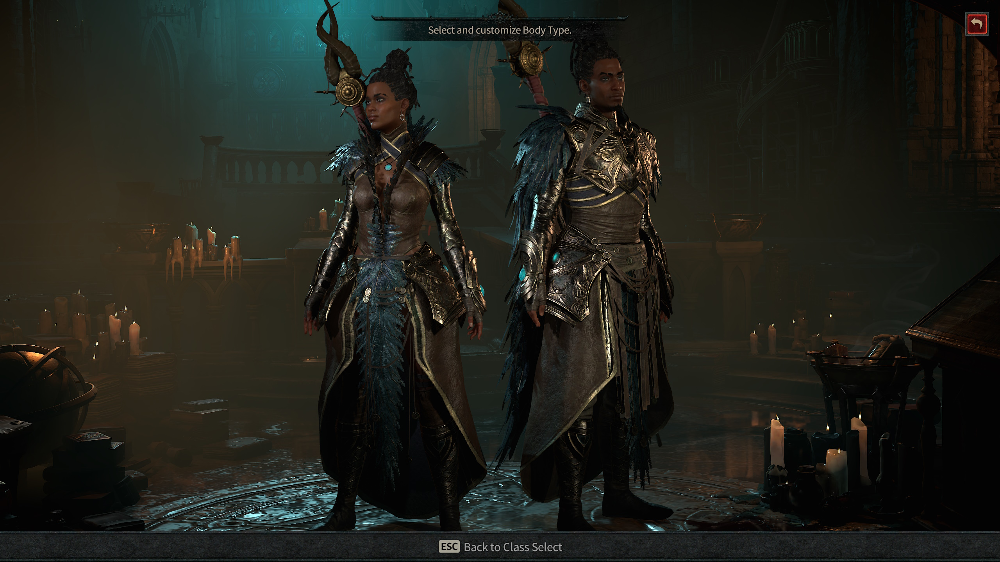

Welcome to the Diablo IV Fan Page!
Diablo IV
Diablo 4 is set 50 years after Diablo 3 and the world of Sanctuary has been free from invasions by the Prime and Lesser Evils during that time. However, a religious order has started worshipping the fallen angel Inarius as a god and a smaller cult has started worshipping the banished demon princess Lilith.
Druid
The Druids are a nomadic race who hail from the untamed lands of Scosglen. Rugged and beautiful, the home of the Druids is teeming with Werewolves and other abominations lurking within the encroaching wilderness. To survive and rule over these wilds, the Druids must forfeit their humanity to awaken the beast within.
Sorceress Class
Sorcerers are mysterious Mages from distant Eastern lands, and are largely of the Vizjerei Clan. Sorcerers have developed a greater understanding of spellcasting when compared to the magic of Khanduras, which is in the form of enchanted items and elixirs.
Necromancer Class

Necromancers belong to a circle bearing the name of Priests of Rathma - named after their founder, child of the angel Inarius and the succubus Lilith, creator and creator of the world of Sanctuary and father and mother of the Nephalems respectively.
Barbarian Class

The Barbarian tribes' origins lie in a time before recorded history. It is written in the Scéal Fada that it was Bul-Kathos and Fiacla-Géar who agreed that in order to safeguard the Worldstone, their people would have to devote the entirety of their lives to the task.
Rogue Class

The Rogue is an adaptable, agile warrior who can specialize in ranged or close quarters combat. She can best any foe with her imbued weapons, perform powerful combo attacks, and can augment her arsenal with deadly poisons and shadow magic to slay demons with impunity.